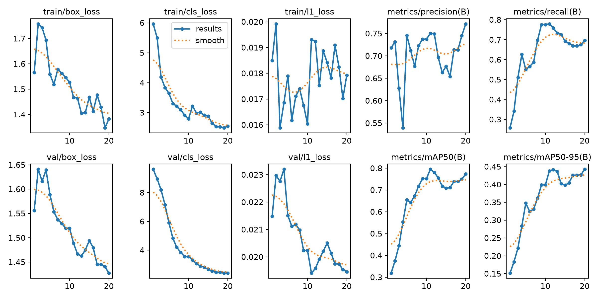
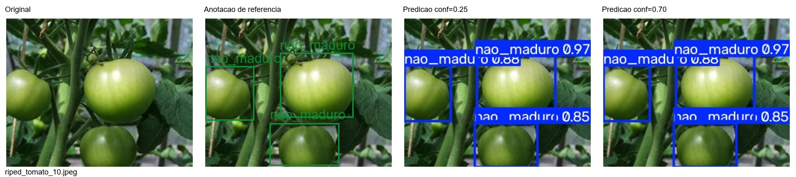
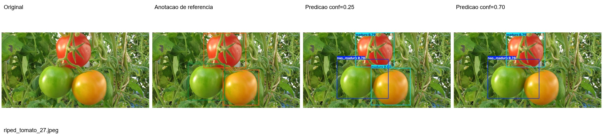
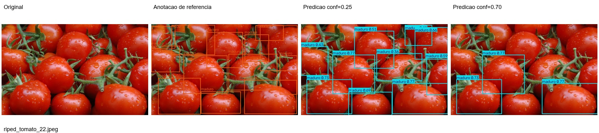
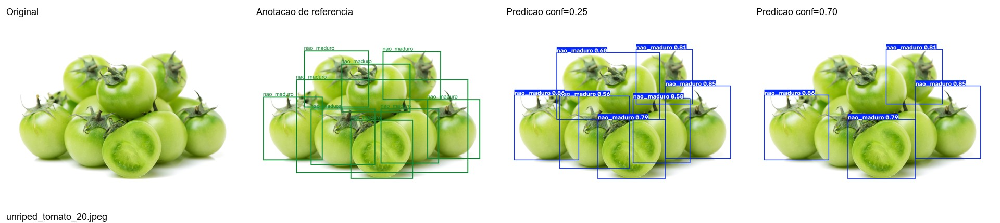
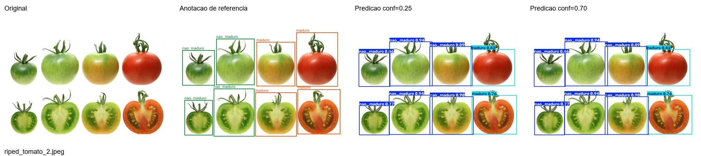

Nome: Kauan Reis Bueno Turma: 8 Período Data: 17/11/2026
O projeto localiza tomates e distingue dois estágios de maturação: 0: nao_maduro (original unriped) e 1: maduro (original riped). A localização é representada por caixas delimitadoras.
Fonte: Ripe and Unripe Tomatoes Dataset, de Suman Kunwar, Kaggle. Licença declarada: CC BY-SA 4.0. O conjunto original contém 177 arquivos de imagem; a finalidade é apoiar aplicações de visão computacional na agricultura.
A revisão identificou cópias idênticas e versões muito semelhantes de uma mesma fotografia. Antes da nova divisão, foram calculados SHA-256 e hash perceptual (pHash, 64 bits). Arquivos com mesmo SHA-256 ou distância de Hamming de pHash ≤ 8 foram agrupados. Foi mantida uma imagem por grupo, escolhendo o arquivo com mais caixas válidas e desempate pelo nome. A anotação usada é a do próprio arquivo selecionado; não foram combinadas caixas de imagens diferentes.
Foram encontrados 89 arquivos distintos por SHA-256. Após o agrupamento visual, restaram 78 imagens representativas. A escolha de um subconjunto menor evita que cópias ou versões da mesma fotografia atravessem os grupos de treino e avaliação. Uma caixa de altura zero identificada na origem foi descartada durante a conferência das anotações. Os representantes selecionados contêm 459 caixas válidas no total.
A divisão usa ordem determinística e estratificação pela classe majoritária, preservando as duas classes em cada grupo. O mapa dos 177 arquivos para seus representantes e a divisão exata estão em evidencias/preparacao_corrigida.json e evidencias/divisoes.csv.
| Divisão | Imagens | Objetos anotados |
|---|---|---|
| train | 55 | 346 |
| val | 15 | 73 |
| test | 8 | 40 |
A conferência após a preparação não encontrou duplicações exatas nem pares com distância pHash ≤ 8 entre divisões. Esse critério não garante ausência de toda semelhança possível entre cenas. O teste em fotografias de outras fontes continua sendo uma melhoria recomendada.
dataset/yolo/
├── images/train/
├── images/val/
├── images/test/
├── labels/train/
├── labels/val/
├── labels/test/
└── data.yamlpath: dataset/yolo
train: images/train
val: images/val
test: images/test
names:
0: nao_maduro
1: maduroExemplo de anotação correspondente a riped_tomato_10.jpeg (classe, centro X, centro Y, largura e altura normalizados):
0 0.597938 0.451890 0.395127 0.435801
0 0.131959 0.506717 0.256420 0.365511
0 0.532334 0.848797 0.371884 0.283037Modelo: YOLO26n com pesos pré-treinados de origem; os pesos antigos treinados com a divisão inadequada não foram reutilizados. Foram executadas 20 épocas, imgsz=416, batch=4, device=cpu, workers=0 e seed=42. Ambiente: Windows 11, Python 3.12.10, Ultralytics 8.4.214 e PyTorch 2.15.0+cpu, em AMD Ryzen 5 5500U.
Os pesos do melhor checkpoint estão em modelo/best.pt. A seleção do checkpoint usou a validação; a divisão de teste/reserva não participou da atualização dos pesos nem da escolha do checkpoint.
Validação: Precision 0,792, Recall 0,696, mAP50 0,776 e mAP50-95 0,444.
Teste separado: Precision 0,831, Recall 0,855, mAP50 0,839 e mAP50-95 0,510. O teste contém 8 imagens e 40 objetos anotados.
Precision mede a proporção de previsões corretas entre as detecções emitidas; Recall mede a fração dos objetos reais que o modelo encontrou. mAP50 é a média, entre classes, da área sob a curva de precisão e revocação com correspondência de caixas em IoU ≥ 0,50. mAP50-95 agrega vários limiares de IoU e exige localização mais rigorosa. Os valores do Ultralytics não são a mesma coisa que a contagem fixa de TP/FP/FN em conf=0.25.

A comparação usa classe correta e IoU ≥ 0,50, com pareamento de uma previsão por objeto. Erros de classe aparecem como falso positivo e falso negativo; a coluna de erro de classe indica esse subconjunto, sem somá-lo novamente aos totais.
| Configuração | Caixas previstas | TP | FP | FN | Erros de classe |
|---|---|---|---|---|---|
| conf=0,25 | 36 | 31 | 5 | 9 | 2 |
| conf=0,70 | 22 | 19 | 3 | 21 | 2 |
Ao elevar o limiar de 0,25 para 0,70, as caixas previstas passaram de 36 para 22. Os verdadeiros positivos passaram de 31 para 19 e os falsos positivos de 5 para 3; os falsos negativos passaram de 9 para 21. Isso mostra a perda de detecções corretas e a redução de parte das detecções incorretas.
| Imagem | TP / FP / FN em 0,25 | TP / FP / FN em 0,70 | Erros de classe em 0,25 / 0,70 |
|---|---|---|---|
| riped_tomato_10.jpeg | 3 / 0 / 0 | 3 / 0 / 0 | 0 / 0 |
| riped_tomato_27.jpeg | 3 / 0 / 0 | 2 / 0 / 1 | 0 / 0 |
| riped_tomato_22.jpeg | 10 / 0 / 3 | 3 / 0 / 10 | 0 / 0 |
| unriped_tomato_20.jpeg | 6 / 1 / 3 | 4 / 0 / 5 | 0 / 0 |
| riped_tomato_2.jpeg | 6 / 2 / 2 | 6 / 2 / 2 | 2 / 2 |
Cada painel apresenta a imagem original, as caixas da anotação de referência e as previsões do modelo.





A execução corrigida usa conjuntos separados pelos critérios de duplicação aplicados. As métricas anteriores, calculadas com vazamento de dados, foram substituídas pelos resultados apresentados neste relatório. O conjunto é pequeno e as métricas não garantem desempenho em qualquer ambiente; ainda são desejáveis exemplos de fontes e condições diferentes.
Os arquivos estão organizados na pasta da atividade:
dataset/yolo/, com imagens, anotações e data.yaml.modelo/best.pt, obtido neste treinamento de 20 épocas.prepare_dataset.py, scripts compartilhados na pasta scripts/ da raiz e comandos.txt.evidencias/preparacao_corrigida.json, metricas_corrigidas.json, resultados_treinamento.csv, comparações CSV/JSON e os cinco painéis visuais.runs/detect/resultados/.Os resultados foram gerados nas execuções registradas. As evidências incluem logs textuais, gráficos e imagens; não são capturas literais de tela do terminal.